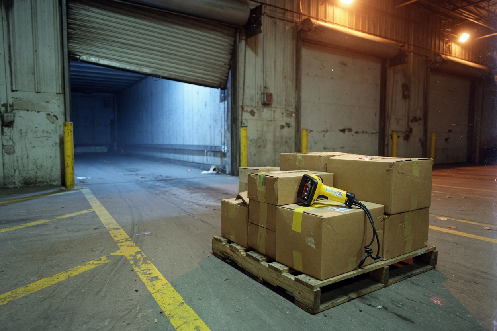
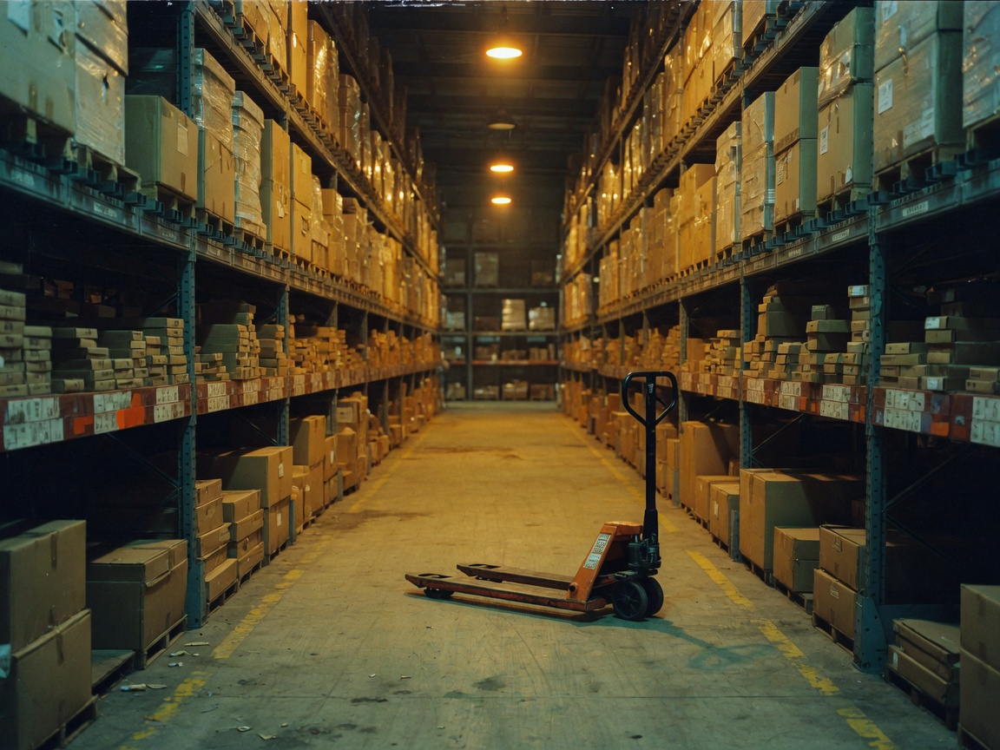
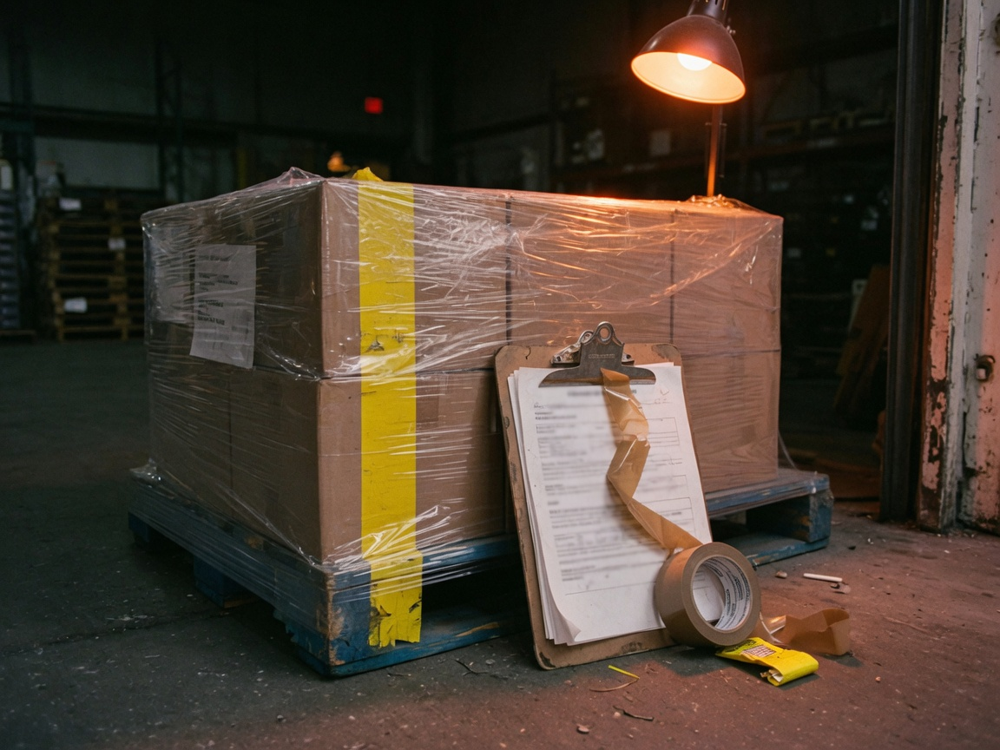
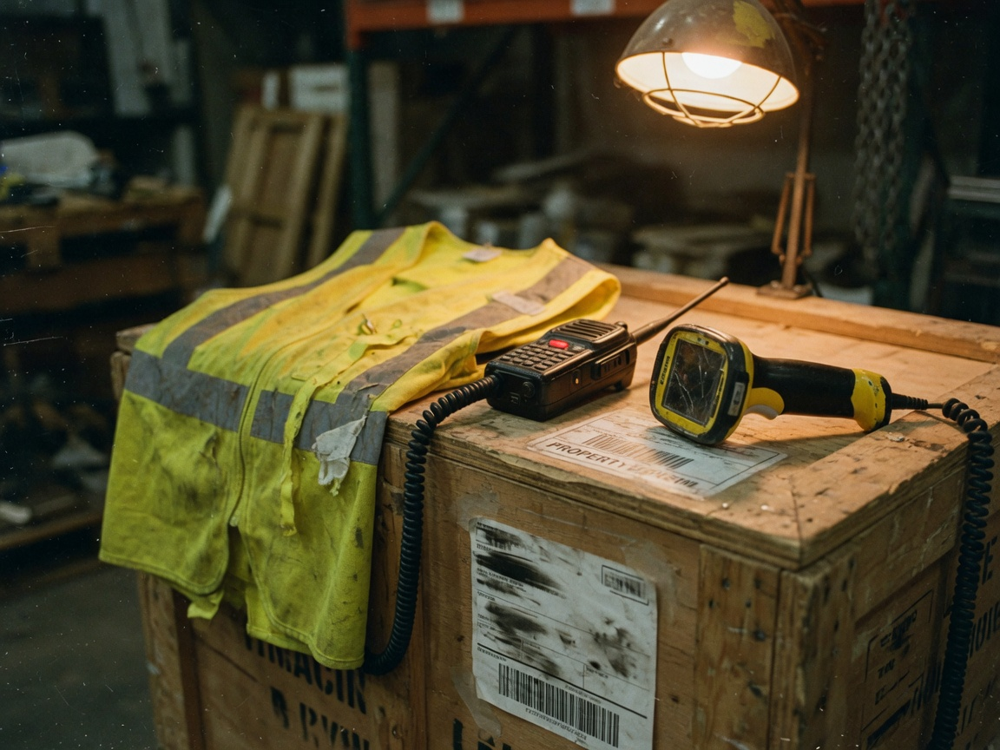

Tener vs have
Spanish: Tengo tres años aquí. No he podido. Si yo hubiera revisado. English does not stack those the same way. Age is I am. Time living here is I have lived. A missing truck is hasn't arrived.

HAVE is not tener. Tonight we cut the extra words.
You already know the job. Inventory, DHL, colleagues, the dock. English is slower because you carry extra boxes: Spanish explanations. A radio does not have time for that.
Spanish: Tengo tres años aquí. No he podido. Si yo hubiera revisado. English does not stack those the same way. Age is I am. Time living here is I have lived. A missing truck is hasn't arrived.
Well, what happened is that we were waiting because DHL, and then my colleague…
DHL hasn't arrived yet. We haven't finished.
Forklift, pallet, destination. In English: HAVE or HAS, then the third column, then the rest. If one piece is missing, the sentence does not leave the dock.
I have go. I have went. She have finished.
I have gone. She has finished.
Spanish stacks tener + años + gerundio. English uses the three-piece load and for.
I have lived here for three years.
After HAVE, you never use the middle column. Went, did, took, saw — those walk alone. With HAVE they become gone, done, taken, seen.

I have already scanned the pallets. My colleague has called DHL.
These four words live with HAVE. They are how a shift talks about time without a long story.

Has the truck arrived yet? I have already counted the inventory. A box is missing. We haven't found it yet.
HAVEN'T is now. HADN'T is a door that already closed. If I had checked — that is the sentence that scares you. It is only two loads, not a speech.
The shift is still open. The truck is still a problem.
I haven't finished the inventory. She hasn't called DHL yet.
You are not telling a novel. You are naming one check you missed.
If I had checked the labels, we would have found the box.
If I hadn't forgotten the label, DHL would have taken the pallet.
Your colleagues do not need the movie. They need the load. Tap Cut it. Keep the HAVE sentence. Throw the rest.

Well, what happened is that we were waiting because DHL, and then my colleague he did not come, and so we could not finish the inventory with all the boxes.
DHL hasn't arrived yet. We haven't finished.
I have three years living here in this country, working in the warehouse, you know, with the inventory and everything.
I have lived here for three years.
If I would have checked the boxes before, maybe we don't have this problem now with the missing pallet and DHL waiting.
If I had checked the labels, we would have found the box.
HAVE, the third column, yet/already, and one closed door. You can miss and try again.
Four short sentences. If a sentence needs a comma and a because, cut it.
1. One thing you have already done today.
2. One thing you haven't finished yet.
3. A question for a colleague, with yet or ever.
4. One closed door: If I had… / If I hadn't…
Saved on this phone. Read it out loud to Gabriel.
HAVE plus the third column. Yet at the end. No extra boxes. That is the whole shift.
ARCHES · Andrés · The Shift · 2026-08-27